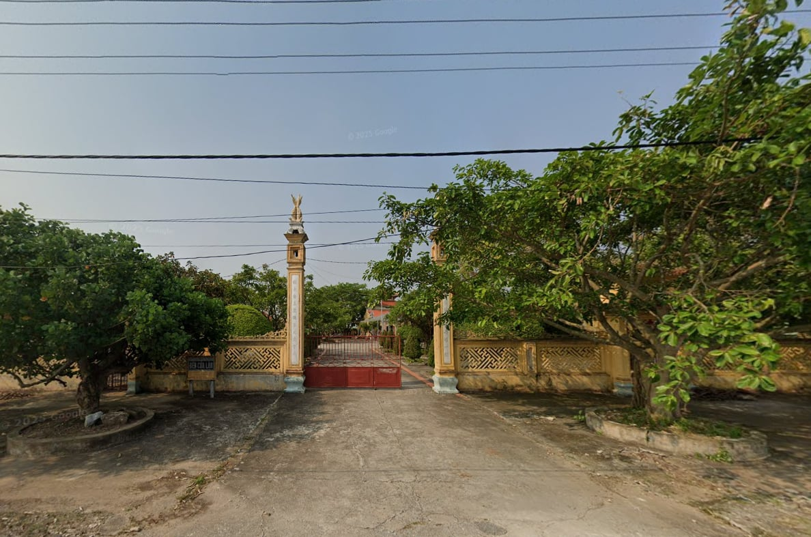
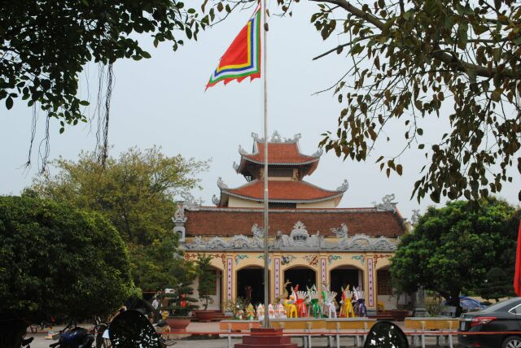
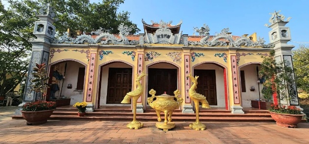
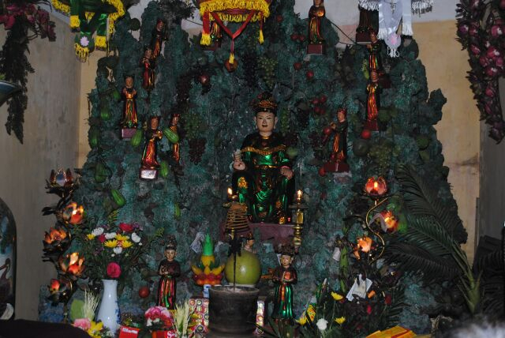
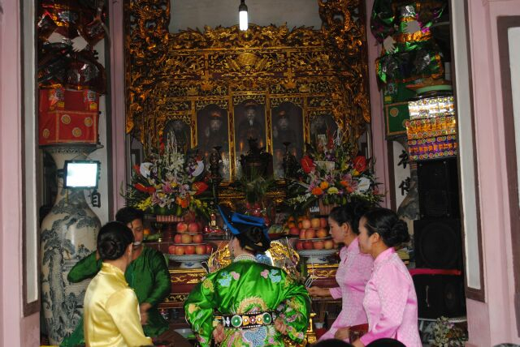
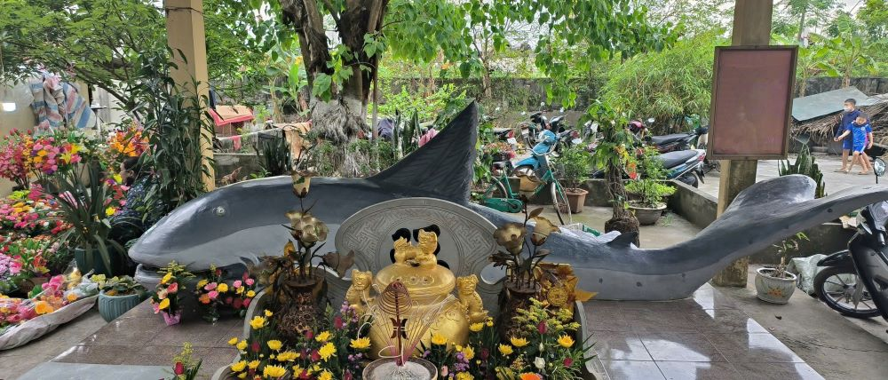

1. Sơ lược về Đền Bà (Đền Cửa Lân)
Đền Bà, hay còn gọi là Đền Cửa Lân, nằm tại xã Đông Minh, huyện Tiền Hải, tỉnh Thái Bình. Đây là một trong những ngôi đền cổ kính ven biển, gắn liền với tín ngưỡng dân gian và đời sống tâm linh của ngư dân địa phương. Ngôi đền không chỉ là nơi thờ tự linh thiêng, mà còn lưu giữ nhiều câu chuyện, truyền thuyết gắn với lịch sử hình thành vùng đất này.
2. Không gian trước đền
 Đền Bà tọa lạc gần cửa biển, trước mặt là không gian thoáng đãng với gió biển lồng lộng, sau lưng là làng quê yên bình. Cổng đền được xây dựng theo lối kiến trúc truyền thống, với mái cong rêu phong và hàng cây cổ thụ tỏa bóng mát, tạo cảm giác trang nghiêm, tĩnh tại.
3. Kiến trúc và cảnh quan
 Bước vào bên trong, du khách có thể chiêm ngưỡng các công trình như tam quan, chính điện, hậu cung… với những hoa văn chạm khắc tinh xảo. Không gian đền vừa cổ kính, vừa hài hòa với thiên nhiên, thể hiện sự giao hòa giữa đất trời và tín ngưỡng của người dân miền biển.
4. Giá trị văn hóa-tín ngưỡng
Đền Bà từ lâu đã trở thành điểm đến tâm linh quan trọng. Người dân nơi đây thường đến lễ bái cầu bình an, cầu lộc, đặc biệt là cầu cho những chuyến ra khơi thuận lợi. Lễ hội tại đền diễn ra hằng năm, không chỉ mang ý nghĩa tín ngưỡng mà còn là dịp hội tụ cộng đồng, góp phần gìn giữ và phát huy bản sắc văn hóa địa phương.
Video giới thiệu Đền Cửa Lân của một học sinh THPT Nam Tiền Hải
5.Lời kết
Đền Bà (Đền Cửa Lân) không chỉ là một di tích tín ngưỡng linh thiêng, mà còn là “linh hồn” văn hóa của xã Đông Minh. Đây là điểm đến xứng đáng để mỗi người ghé thăm, chiêm bái và tìm lại sự an yên trong lòng nơi cửa biển gió lộng.